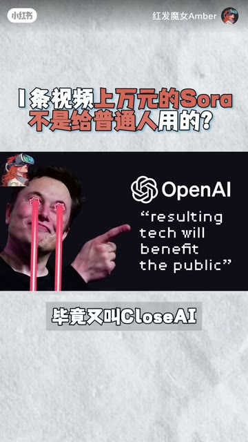
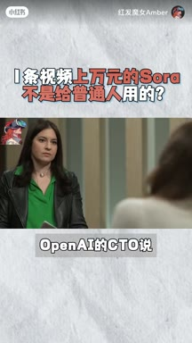
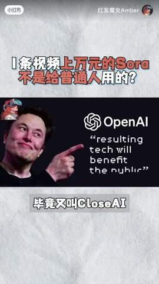
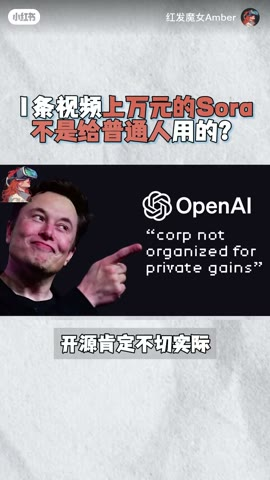

01钩子 / 问题
新闻入口：即将开放，但多数人可能用不上
开场引用 OpenAI 管理层采访，提出 Sora 将上线但成本高昂。作者把问题收窄成个人创作者是否值得付重金，以及模型为何昂贵。
Sora 的连续性和时长令人惊艳，但高算力成本、随机性和物理理解缺陷意味着它短期更适合大型内容公司，而不是普通个人创作者。
这是 3 分 45 秒的长观点视频，论点并不浅：它同时解释能力、成本、物理限制、商业对象和替代方案。但对小红书信息流而言，价值兑现很晚，且大量数据与推理需要来源支撑。
Sora 的连续性和时长令人惊艳，但高算力成本、随机性和物理理解缺陷意味着它短期更适合大型内容公司，而不是普通个人创作者。
不是复述内容，而是标出每一段承担的叙事任务、观众问题和画面证据。
开场引用 OpenAI 管理层采访，提出 Sora 将上线但成本高昂。作者把问题收窄成个人创作者是否值得付重金，以及模型为何昂贵。
视频解释 Sora 能以文字生成约一分钟视频，并在连续性、稳定性、时长和基础物理理解上领先当时常见工具。官方样片构成主要证据。
作者引用估算说明一分钟生成可能需要多张 GPU 和较长时间，即使官方说二十秒 720p 只需几分钟，真实可用率仍受随机抽卡影响。她把 OpenAI 巨额芯片投资与模型成本联系起来。
咖啡杯中的海盗船展示了碰撞和水波等合理表现，但吹蜡烛等翻车片段说明物理因果仍不稳定。
作者进一步指出，模拟现实不仅是物理规律，还包含社会语境和人类行为判断，并用饮料选择的例子说明这种复杂性。
她判断 Sora 更适合有预算的大型影视、广告和内容公司，同时提醒普通创作者仍可以使用 Runway、Pika、SVD 等工具。
结尾把观点从模型竞争拉回创作：不用昂贵器材也能拍电影，AI 只是工具，关键仍是讲什么故事、如何放大个人魅力。
下列章节覆盖视频的主要论点、步骤与结果；每段都保留时间码和关键画面。
开场引用 OpenAI 管理层采访，提出 Sora 将上线但成本高昂。作者把问题收窄成个人创作者是否值得付重金，以及模型为何昂贵。
视频解释 Sora 能以文字生成约一分钟视频，并在连续性、稳定性、时长和基础物理理解上领先当时常见工具。官方样片构成主要证据。
作者引用估算说明一分钟生成可能需要多张 GPU 和较长时间，即使官方说二十秒 720p 只需几分钟，真实可用率仍受随机抽卡影响。她把 OpenAI 巨额芯片投资与模型成本联系起来。

咖啡杯中的海盗船展示了碰撞和水波等合理表现，但吹蜡烛等翻车片段说明物理因果仍不稳定。
作者进一步指出，模拟现实不仅是物理规律，还包含社会语境和人类行为判断，并用饮料选择的例子说明这种复杂性。
她判断 Sora 更适合有预算的大型影视、广告和内容公司，同时提醒普通创作者仍可以使用 Runway、Pika、SVD 等工具。
结尾把观点从模型竞争拉回创作：不用昂贵器材也能拍电影，AI 只是工具，关键仍是讲什么故事、如何放大个人魅力。
短视频每 1 秒、常规视频每 2 秒、超长视频每 3 秒取一帧。

小红书官方 zh-CN 字幕 · 55 段 · 1305 字。字幕只记录声音；工具名、界面文字和结果含义必须结合上方视觉知识地图复核。
爆火一个月的sora很快就会向公众开放，但我们大部分人可能都用不上
今天凌晨openai首席技术官接受华尔街时报的采访
他表示索尔将在年底前上线
同时直言不讳地告诉大家，索尔的成本贵得离谱，这意味着索尔上线以后
用户想使用注定得磕重金生成一条一分钟的视频
肯定比你买里一周的原价课贵，这一消息既让业内多了点期待
同时又看起来好像离大部分人很遥远，我就一个人做短视频需要氪重金
用sora吗？而且一个还不能完全模拟现实的sora为什么这么贵？
大家好，我是amber，这期我们聊聊sorry
先给一些朋友简单说一下
索尔是美国人工智能公司openai发布的纹身视频模型
能根据一段文字生成长达一分钟的视频
比如这几段大家看过无数次的素材，这些画面初看很惊艳，现在看也很惊艳
因为它似乎突破了ai生成视频目前最大的问题，画面连续性，稳定性，视频时长
也似乎对物理世界有了基础的理解力
正因如此才能将runway皮卡这样的ai明星公司按在地上狠狠摩擦
但sora的问题在于算力，算力还是算力，根据一位大佬的推理
Sora生成一分钟的视频，用八张a幺零零的gpu
也要三小时以上，而在今天凌晨的采访中
Openai的cto说生成一段二十秒长的七百二十p视频，只用了几分钟
这个具体的时间我们不得而知
可以肯定的是，Ai生成的视频难以保证每次的画面都可用，仍然很随机
你抽很多次卡也不一定能得到想要的画面，就像你约会八百次
也遇不到看着顺眼的人
这也是为啥openai ceo奥特曼四处奔波要拉七万亿投资制造ai芯片
山姆等等，你需要多少？
五到七万亿大概不对
只是这比世界上几乎所有国家的GDP都要高
这也是为啥，因为答案能一路躺到两万亿的估值
因为siri对算力的需求太恐怖了，用户抽的每一次卡都在烧钱
另一篇报道里也写chatgpt每天要消耗五十万千瓦的电力
Sora只会更高。所以在算力没有跟上以前
索尔是不会向公众开放的，即使开放订阅费也注定会极其昂贵
除非openai开源部分的索尔的技术
让社区共同参与到开发和维护里，把价格打下来

但考虑到open ai毕竟又叫close ai

开源肯定不切实际
再说说索尔的第二个问题，他到底能不能模拟现实，有没有理解物理世界的能力？
从官方的样片来看有但不多，比如咖啡杯里海盗船这段能看到他俩互相撞击
让水波随之而动。这基本符合物理规律
但也有很多翻车片段，最有意思的就是这个吹蜡烛的画面
什么呀，笨死了，蜡烛没吹掉，违背了物理现实，另外也有报道提到
既然siri能模拟现实，那他更要考虑到社会中的人情世故
要理解人类的复杂行为
比如现在一个人手里有一瓶娃哈哈和农夫山泉，索尔能预测这人该喝哪瓶
这些都是索尔上线以前他需要解决和优化的问题
总结一下，考虑到sura的使用成本，它注定就不是给大部分人准备的
而是那些有金主爸爸养着的大型影视公司
广告公司，内容公司sora也不只是视频生成器，而是未来agi的大脑
不过好在，在索尔这棵苍天大树下，正在长出缤纷的ai工具
跑道
皮卡svd，Big swords都挺香的
又不是用red和阿来才能拍电影，用手机也可以，还是那句话，Ai只是工具
关键看你要讲怎样的故事，如何放大自我的魅力
愿在勒紧裤腰带过日子的现在，Ai让我们都有美好的未来
多个成本、能耗、投资和模型能力数字属于当时报道或作者推理，需要逐项查证。长视频低点赞可能与长度和分发有关，但没有留存曲线，不能把因果锁定为时长。
打开小红书原帖 ↗